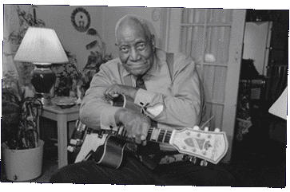

Frank Edwards
 Mr. Frank Edwards родился 20 марта в 1909 году в Вашингтоне, Джорджия. Эдвардс покинул дом в 14 лет из-за разногласий с отцом и направился к границе St. Augustine, штат Florida. Он купил гитару и начал учиться играть. Гитарист Tampa Red одобрял и поддерживал это начинание. Эдвардс взялся и за губную гармонику, черпая вдохновение в игре John Lee "Sonny Boy" Williamson и других.
Mr. Frank Edwards родился 20 марта в 1909 году в Вашингтоне, Джорджия. Эдвардс покинул дом в 14 лет из-за разногласий с отцом и направился к границе St. Augustine, штат Florida. Он купил гитару и начал учиться играть. Гитарист Tampa Red одобрял и поддерживал это начинание. Эдвардс взялся и за губную гармонику, черпая вдохновение в игре John Lee "Sonny Boy" Williamson и других.
В 1930х он много путешествовал на автобусе и поезде, часто бродяжничал, учась музыкальному ремеслу и играя на улицах. В 1936 году он переехал в Атланту и познакомился с блюзменом из Миссисипи - Tommy McClennan. Это поспособствовало первой записи в 1941 году. Следующий раз Эдвардс записался в 1949 году, но полноформатный релиз Done Some Travelin' был записан только в 1972м. А пока он работал плотником, художником и водопроводчиком. Помимо двухлетнего периода, когда пожар в доме оставил Фрэнка без гитары, Эдвардс всё время играл.
Знаменательно, что последние месяцы своей жизни – а, фактически, последние часы – он провел, записывая музыку, которую он любил. Всего за два часа до смерти, Эдвардс закончил запись в Хилсборо, Северная Каролина, для некоммерческого фонда помощи Music Maker Relief Foundation. Сердечный приступ случился, когда он ехал домой вместе с блюзовыми волонтерами Larry Garrett и Lamar Jones. Эдвардс умер в машине скорой помощи по дороге в больницу.
На последней записи представлены семь песен, включая новый авторский материал. “ Я никогда не слышал, чтобы он так отлично играл”, говорит Tim Duffy, основатель фонда Music Maker. “ Его игру можно было сравнить с цветком, который полностью раскрылся. Это было похоже на старинную музыку из Африки”
За два дня до его смерти, праздновался день рождения Эдвардса. Празднование ежегодно проходило в местном заведении - Northside Tavern. Вечер, организованный Danny "Mudcat" Dudeck'ом, сопровождался выступлениями Cora Mae Bryant, Eddie Tigner, Carlos Capote, Ross Pead, Donnie McCormick и других. Сам Эдвардс играл около одного часа. Ему аккомпанировали гитарист Jim Ransone, басист Dave Roth и барабанщик Evan Frayer.
“Он играл весьма уверенно – уверенней, чем я когда-либо слышал”, говорит Dudeck. “С тех пор, как я знаю его, он играет всё лучше и лучше. Но в тот вечер, он действительно зажигал.”
Cora Mae Bryant, дочь пидмонтского блюзового музыканта Curley Weaver’а, вспоминает как Эдвардс выступал вместе с её отцом и дядей неподалеку города Conyers и Covington в 1940х и 50х. “Мы звали его Мистер Лысая Голова”, вспоминает с нежностью Bryant. “Мы любили музыку Мистера Фрэнка. Они играли дома у друзей и знакомых, на вечеринках барбекю.”
Когда не выступал, Эдвардс был завсегдатаем местечек вроде Blind Willie's и Northside Tavern.
“Фрэнк был последним из уличных музыкантов Атланты”, говорит Eric King, владелец Blind Willie's и организатор исторического центра Антанты, куда был приглашен Эдвардс в феврале. “Он был такой же неотъемлемой частью сцены, как Blind Willie [McTell] или любой другой музыкант, 30 лет назад. Он был крестным отцом блюза в Атланте.”
Эдвардс “был мне как отец”, говорит Beverly "Guitar" Watkins. “Я могла прийти к нему и рассказать немного о том, что в моей жизни идет не так. И он выслушав, всегда давал пару дельных советов”
Adds Dudeck: “Он ушел на пике своей игры, с новыми песнями, с огнем и большой вечеринкой. Он знал, что его любили”
Перевод @Александр Сомов

ВКонтакте Mr Frank Edwards - 2004 - Chicken Raid